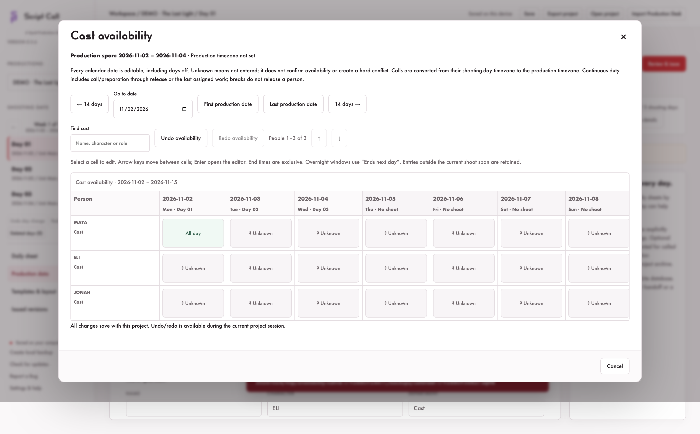

Local call sheet software made by some friends at Squid Productions to bring the plan to the crew.
Build your shooting day, keep cast and crew calls together, and hand off a readable PDF. Saved on your computer.
The day before the shoot.
- Keep production records, shooting days, locations, schedules, and cast and crew calls together.
- Choose a G-Casper-style front with a separate three-column crew back, or the Original Narrative layout.
- Customize templates, section order, A4 or US Letter paper, clock format, and color or ink-saving output.
- Preview and export PDFs, review required details, and keep issued revisions with their original PDF bytes.
- Import a Production Desk project, review mappings, and compare later changes while preserving your manual edits and issued days.
- Save local backups and export portable
.callsheetprojects.
Plan around cast and crew availability.
In Production Data, open Cast availability or Crew availability beside Add. Record unavailable dates, all-day availability or multiple time windows, including overnight windows. A scrollable spreadsheet and date navigation keep the full production span manageable.
Call sheets show a red text/icon advisory when a person’s full assigned interval conflicts with recorded availability. Unknown information stays distinct from a confirmed conflict. Your call times stay under your control.

Start with your production.
Fresh installations and new productions start blank. The bundled Last Light and legacy Quiet Hours demo scripts and load buttons have been removed. Existing saved or imported projects remain intact, and G-Casper and Original Narrative templates remain available.
Keep the production on your device.
Work with local project files and keep an independent backup. Sharing a PDF or project is your choice. Read the quick start for templates, importing, and issuing your first sheet.
Explore Production Desk · Explore Scenic · Explore Shot Reporter